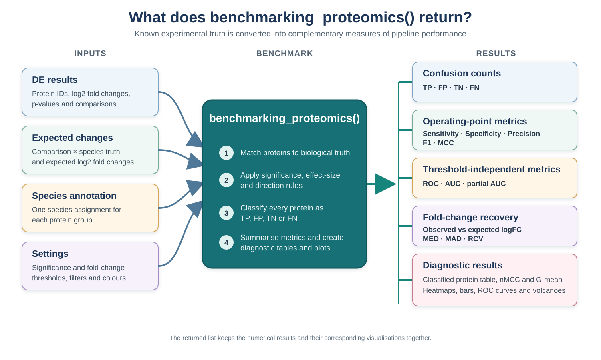
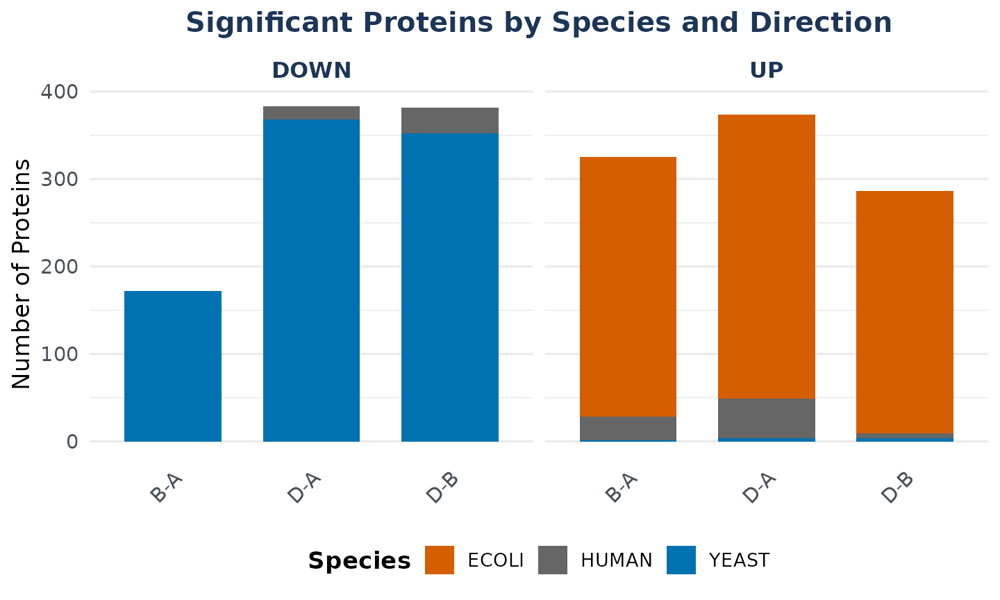
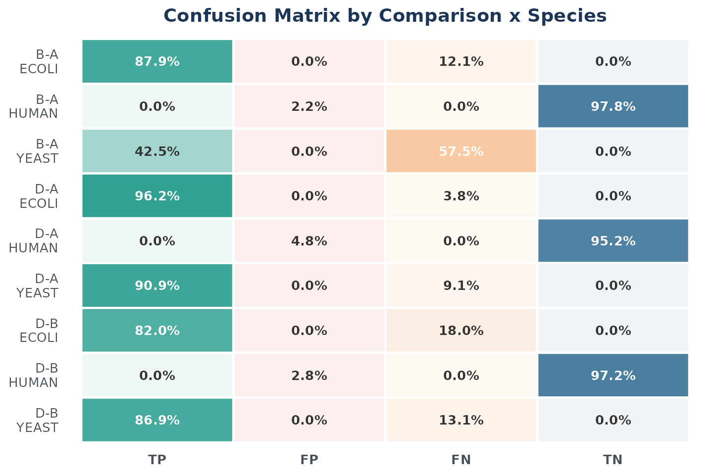
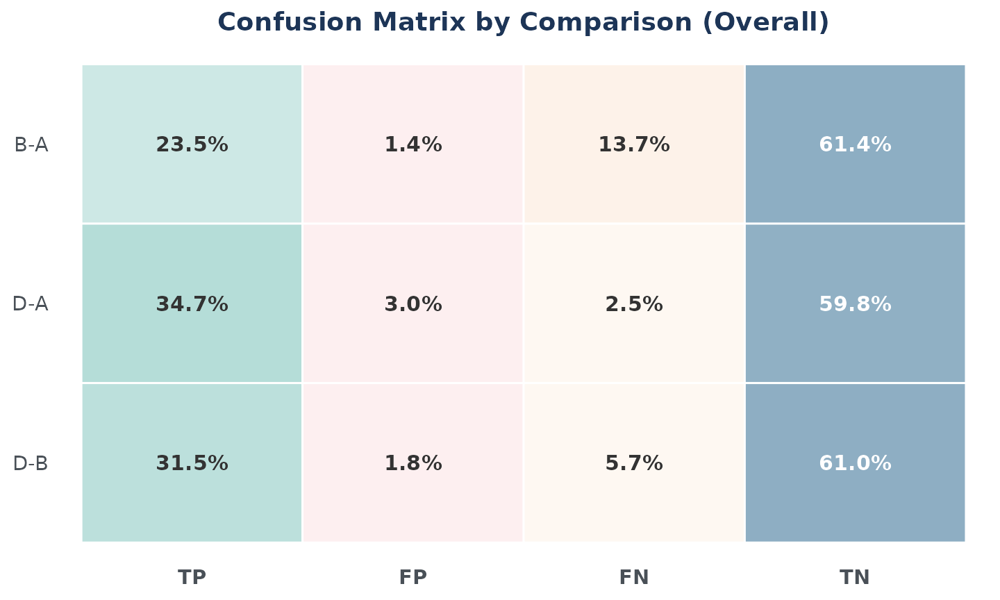
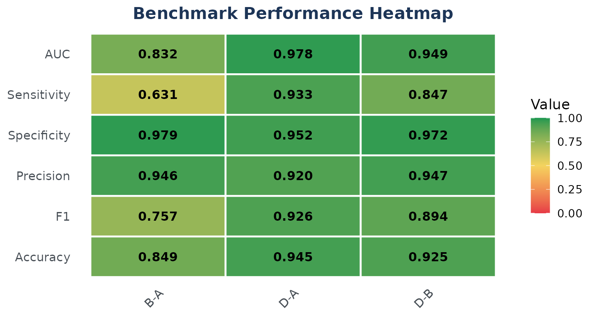
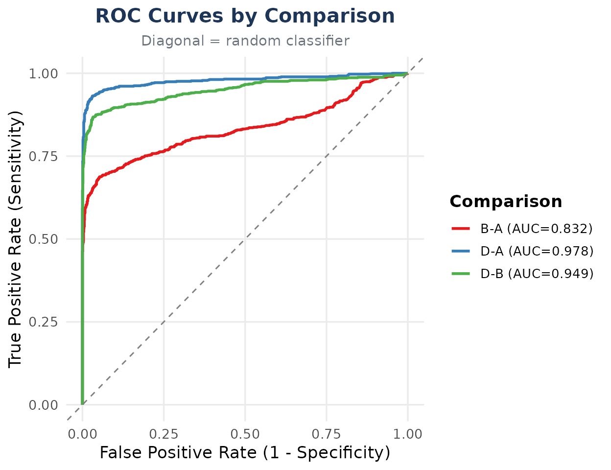
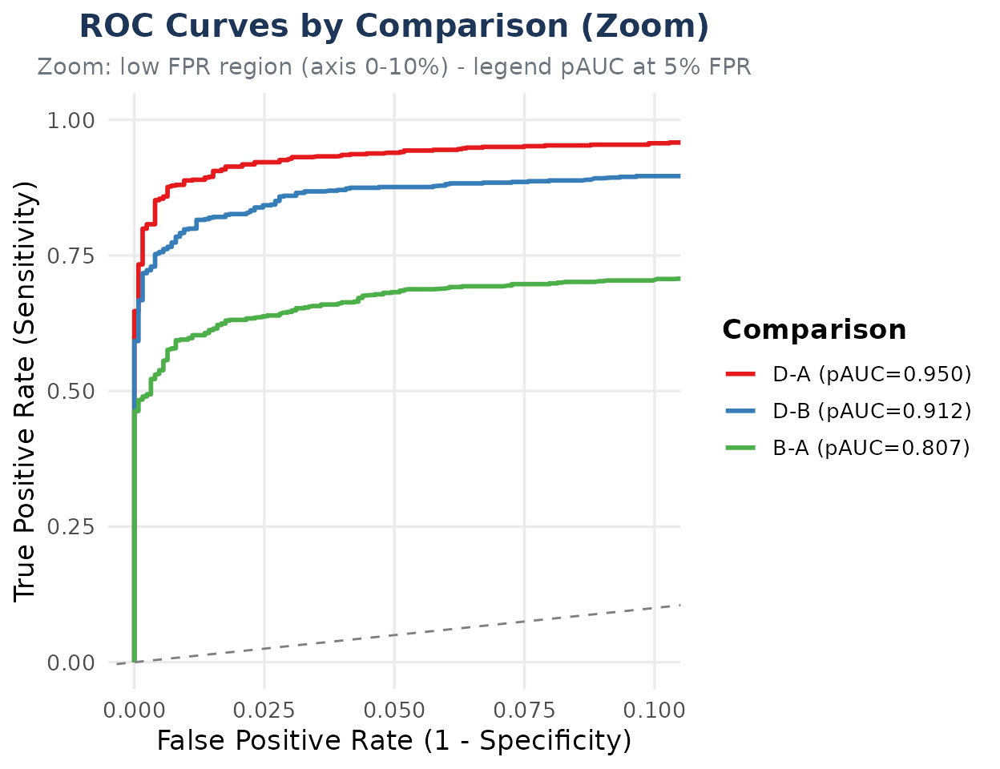
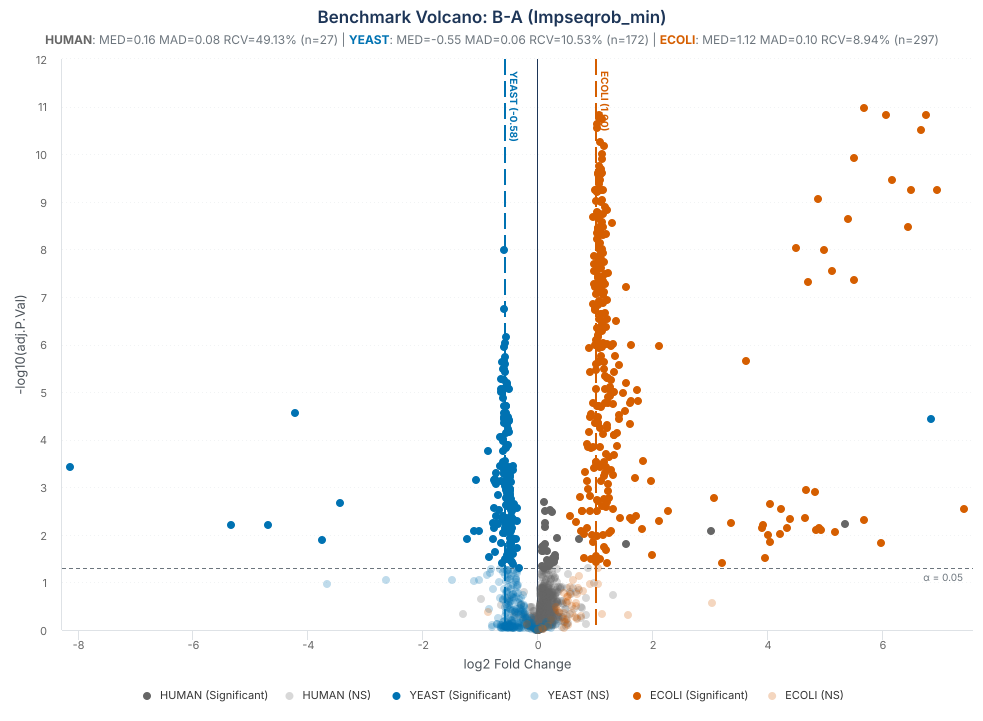
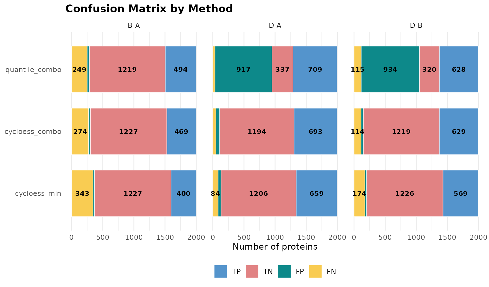
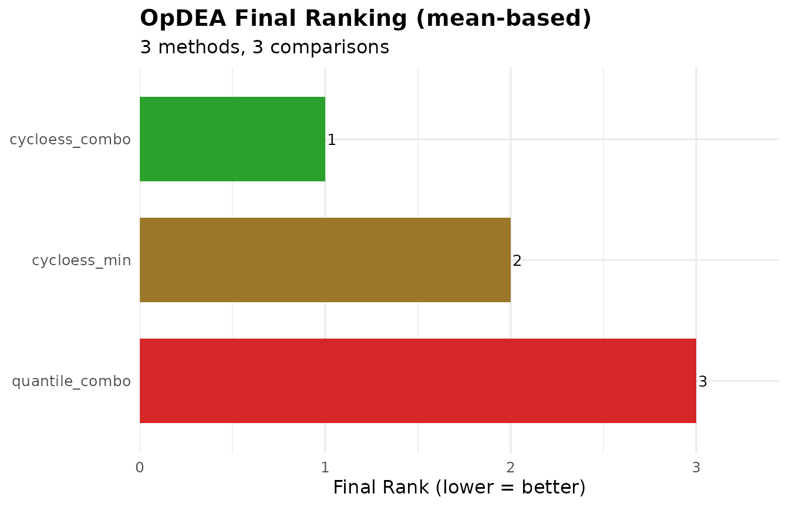

Benchmarking with a spike-in: scoring against known truth
Sergio Ciordia
Source:vignettes/benchmarking.Rmd
benchmarking.RmdIntroduction
In most proteomics experiments, the proteins that truly change
between conditions are unknown. The comparisons in
vignette("choosing-methods") therefore rely on indirect
criteria. A spike-in experiment provides a known answer instead:
proteins from one or more foreign organisms are mixed into a constant
background at predefined ratios. We know in advance which species should
change, the expected direction and size of each change, and that the
background proteins should remain unchanged.
benchmarking_proteomics() compares a
differential-expression result with this known experimental design.
Given the DE table, a protein-to-species annotation, and the expected
fold changes, it classifies proteins as TP, FP, TN, or FN; calculates
performance metrics; and produces diagnostic tables and plots. This
vignette explains those classification rules and shows how to interpret
the resulting benchmark.
Installation
if (!requireNamespace("BiocManager", quietly = TRUE))
install.packages("BiocManager")
BiocManager::install("NADIA")Some metrics need pROC, which is optional:
have_proc <- requireNamespace("pROC", quietly = TRUE)
have_proc
#> [1] TRUEIf it is not installed, the confusion-matrix metrics and static plots
are still available, but AUC, partial AUC, ROC curves, and the
multi-pipeline ranking are skipped. Install it with
install.packages("pROC") to run those sections.
The experiment
The example dataset originates from a three-proteome spike-in experiment. Each sample contains a constant 80% Homo sapiens (HeLa) background, while Escherichia coli and Saccharomyces cerevisiae proteins make up the remaining 20% in reciprocal proportions. Across the complete experimental design, the E. coli fraction increases and the yeast fraction decreases from condition A to condition D. The four condition mixtures were prepared from the same HeLa stock and then divided into four aliquots, each of which was carried independently through the complete sample-preparation workflow and LC–ESI–MS/MS analysis. These are therefore termed pseudo-biological replicates: they are not independent biological specimens, but they capture more experimental variation than repeated injections of the same prepared sample.

Complete three-proteome spike-in design underlying the benchmark dataset. HeLa remains constant at 80%, while E. coli increases and yeast decreases across conditions. The dataset distributed with NADIA retains conditions A, B, and D and 2,000 protein groups.
The reduced dataset distributed with NADIA retains conditions A, B, and D: 12 samples and 2,000 protein groups. These groups were selected at random with a fixed seed rather than by abundance or data completeness, preserving a realistic missing-value structure. Condition D contains nominally 0% yeast, which produces the strongest biological missingness in the experiment and makes this condition particularly informative for assessing whether a pipeline recovers the expected biological changes.
The processed nadia_dia object identifies proteins
through PG.ProteinGroups, but it deliberately keeps the
experimental species annotation in a separate file. The following
expandable example shows how that file is read, how its organism column
is converted into the species_df input required by
benchmarking_proteomics(), and a few representative rows
from each species.
Show the species annotation code and example rows
spikein <- read.delim(system.file("extdata", "nadia_dia_spikein.tsv.gz",
package = "NADIA"))
species_df <- data.frame(Protein.IDs = spikein$PG.ProteinGroups,
Species = spikein$PG.OrganismId)
species_example <- do.call(rbind, lapply(c("HUMAN", "ECOLI", "YEAST"),
function(species) head(species_df[species_df$Species == species, ], 2)))
rownames(species_example) <- NULL
species_example
#> Protein.IDs Species
#> 1 A0A024RBG1 HUMAN
#> 2 A0A140T897;P02769 HUMAN
#> 3 P00370 ECOLI
#> 4 P00550 ECOLI
#> 5 O13535 YEAST
#> 6 O13563 YEAST
table(species_df$Species)
#>
#> ECOLI HUMAN YEAST
#> 338 1256 406Each protein in species_df must map to exactly one
species. NADIA collapses exact duplicate rows with a message, rejects
proteins assigned to conflicting species, and verifies that joining the
annotation does not change the number of DE rows. These checks prevent
duplicated mappings from silently inflating the confusion matrix and
every metric derived from it.
Declaring the truth
expected_values says what each species should do in each
comparison, as a log2 fold change. This is the specification of the
experiment, taken from how much of each organism was mixed in — not
something derived from the data. NADIA accepts either a base R
data.frame or a tibble. The first option below
is executed in this vignette; the commented alternative creates the same
expected object with tibble::tribble().
Show the code used to define the expected fold changes
# Option 1: base R data.frame
expected <- data.frame(
Comparison = rep(c("B-A", "D-A", "D-B"), each = 2),
Species = rep(c("ECOLI", "YEAST"), times = 3),
expected_logFC = c(1, -0.58, 2, -3.3, 1, -2.72))
# Option 2: equivalent row-wise tibble
# expected <- tibble::tribble(
# ~Comparison, ~Species, ~expected_logFC,
# "B-A", "ECOLI", 1,
# "B-A", "YEAST", -0.58,
# "D-A", "ECOLI", 2,
# "D-A", "YEAST", -3.3,
# "D-B", "ECOLI", 1,
# "D-B", "YEAST", -2.72
# )
expectedThe resulting table contains one expected change for each spike-in species and comparison:
#> Comparison Species expected_logFC
#> 1 B-A ECOLI 1.00
#> 2 B-A YEAST -0.58
#> 3 D-A ECOLI 2.00
#> 4 D-A YEAST -3.30
#> 5 D-B ECOLI 1.00
#> 6 D-B YEAST -2.72Condition D requires a practical convention. Its nominal yeast
proportion is 0%, so the exact yeast fold change relative to a non-zero
condition would be zero on the ratio scale and -Inf after
log2 transformation. Because the benchmark requires a finite expected
value, NADIA represents this complete depletion with a finite floor. For
D-A, the chosen value is approximately -3.3, corresponding
to a tenfold decrease (2^-3.3 is approximately 0.10). Using
the same floor relative to condition B gives approximately -2.72 for
D-B. These values are an operational scoring convention;
they do not imply that yeast was intentionally added to condition D.
Because this table defines the biological truth, NADIA validates it
before scoring. expected_logFC must be numeric, finite, and
non-zero.
Keep species annotation and expected changes
separate. Every protein that may enter the benchmark, including
the human background, must have its species recorded in
species_df. By contrast, expected_values
contains only the species expected to change in each comparison. Human
proteins are therefore present in species_df but absent
from expected_values, so NADIA treats them as background: a
significant human protein is an FP and a non-significant one is a TN.
The same rule applies to any other species omitted from
expected_values; background species should not be added
with expected_logFC = 0.
Scoring a pipeline
The species annotation and the expected changes now provide the
experimental truth against which the pipeline can be scored. First,
process_proteomics() runs the complete analysis and
produces a differential-expression table.
benchmarking_proteomics() then compares every protein in
that table with the declared truth, assigns TP, FP, TN, or FN, and
summarises how well the expected changes were recovered.
benchmarking_proteomics() returns a named list
containing numerical tables and their corresponding diagnostic plots.
Its principal inputs and controls are summarised below.
Show the parameters of benchmarking_proteomics()
Data and experimental truth
-
de_res: the differential-expression table, including protein IDs, log2 fold changes, p-values, and comparisons. -
expected_values: the expectedComparison,Species, andexpected_logFCcombinations. -
species_df: the protein-to-species mapping. It is needed unlessde_resalready contains aSpeciescolumn.
Classification settings
-
alpha: significance threshold; the default is 0.05. -
lfc_thr: minimum absolute log2 fold change; the default is 0. -
p_col: p-value column used for classification; the default isadj.P.Val.
Selection and output
-
comparisonsandassay: optional filters selecting the results to score. -
output_dir: export directory;NULLkeeps the results in memory without writing files. -
verboseandspecies_colors: control progress messages and plot colours.
The diagram groups the outputs by the question they answer. The following sections inspect these results individually.

Inputs, classification steps, and output families produced by benchmarking_proteomics().
In this example, res$DEPs_results is the
differential-expression table, expected is the truth table
defined above, and species_df supplies the
protein-to-species annotation. Setting output_dir = NULL
keeps all outputs in the returned bench object.
res <- process_proteomics(nadia_dia, verbose = FALSE)
bench <- benchmarking_proteomics(res$DEPs_results, expected,
species_df = species_df,
output_dir = NULL, verbose = FALSE)The metrics_table summary
The first summary to inspect is metrics_table. Each row
represents one comparison and the following code selects the principal
classification and ranking indicators.
metric_cols <- c("Comparison", "Sensitivity", "Specificity", "Precision",
"F1", "MCC", "AUC")
knitr::kable(bench$metrics_table[, metric_cols], digits = 3,
caption = "Classification and ranking metrics by comparison.")| Comparison | Sensitivity | Specificity | Precision | F1 | MCC | AUC |
|---|---|---|---|---|---|---|
| B-A | 0.631 | 0.979 | 0.946 | 0.757 | 0.682 | 0.832 |
| D-A | 0.933 | 0.952 | 0.920 | 0.926 | 0.882 | 0.978 |
| D-B | 0.847 | 0.972 | 0.947 | 0.894 | 0.840 | 0.949 |
All six indicators are interpreted so that better performance gives a larger value, except that MCC can also be negative:
- Sensitivity is the proportion of expected spike-in changes recovered as TP. Low sensitivity means that many expected changes were missed or assigned the wrong direction.
- Specificity is the proportion of background proteins correctly retained as TN. It decreases when unchanged proteins are called significant.
- Precision is the proportion of positive predictions that are TP rather than FP. It asks how often a reported detection is correct.
- F1 is the harmonic mean of sensitivity and precision, and is high only when both recovery and reliability are high.
- MCC combines TP, FP, TN, and FN in one balanced coefficient. It ranges from -1 to 1, where 1 is perfect classification, 0 is no better than chance, and negative values indicate systematic disagreement.
- AUC measures how well the p-values rank spike-in proteins ahead of background proteins across all possible thresholds. A value of 0.5 indicates random ranking and 1 indicates perfect separation.
How TP, FP, TN and FN are defined
The reported metrics follow from how each protein is matched to the experimental truth and to the result returned by the differential-expression analysis.
Two independent things go into every classification.
truth — what the protein is.
It is 1 if the protein belongs to a spike-in species with a declared
expectation, 0 if it is background. This comes from
species_df and expected_values, that is, from
how the experiment was mixed. It is a property of the protein and
no analysis can change it.
predicted — what the pipeline
said. It is 1 only if the protein is significant
(adj.P.Val <= alpha, with alpha = 0.05 by
default) and its logFC has the sign the
experiment specified. Significance alone is not enough.
Crossing them gives the four cells:
truth = 1 (spike-in) |
truth = 0 (background) |
|
|---|---|---|
predicted = 1 |
TP — detected, right direction | FP — background wrongly flagged |
predicted = 0 |
FN — missed, or found with the wrong sign | TN — correctly left alone |
The same rules in biological terms are:
| Protein scenario | Analysis result | Class |
|---|---|---|
| Significant human protein | A change that should not exist is called significant | FP |
| Non-significant human protein | The background is correctly left unchanged | TN |
| Significant spike-in, correct sign | The expected change is recovered | TP |
| Non-significant spike-in | A real expected change is missed | FN |
| Significant spike-in, wrong sign | The expected direction is not recovered | FN |
The FN label alone does not distinguish a spike-in
protein that was not significant from one that was significant in the
wrong direction. To preserve this useful diagnostic information,
classified_df includes two additional columns without
changing the classification metrics. is_significant records
whether the protein passed both the adjusted p-value and fold-change
thresholds, irrespective of direction. direction_error
identifies the subset of FNs that passed those thresholds but had the
opposite sign. The following code retrieves these cases; there are nine
in this analysis:
Show the code used to identify significant spike-ins with the wrong direction
wrong_sign <- subset(bench$classified_df, direction_error)
wrong_sign <- merge(wrong_sign, expected,
by = c("Comparison", "Species"))
nrow(wrong_sign)
table(wrong_sign$Comparison, wrong_sign$Species)
wrong_sign[, c("Protein.IDs", "Comparison", "Species", "logFC",
"expected_logFC", "adj.P.Val", "is_significant",
"direction_error", "classification")]#> [1] 9
#>
#> YEAST
#> B-A 1
#> D-A 4
#> D-B 4
#> Protein.IDs Comparison Species logFC expected_logFC adj.P.Val
#> 1 Q04231 B-A YEAST 6.848494 -0.58 3.623551e-05
#> 2 P25574 D-A YEAST 1.430882 -3.30 1.897355e-03
#> 3 P33202 D-A YEAST 1.606620 -3.30 1.010409e-03
#> 4 Q04231 D-A YEAST 4.645648 -3.30 4.141794e-04
#> 5 Q06408 D-A YEAST 1.340623 -3.30 3.315274e-05
#> 6 P25574 D-B YEAST 1.928146 -2.72 2.375836e-04
#> 7 P33202 D-B YEAST 1.629626 -2.72 1.097067e-03
#> 8 Q03835 D-B YEAST 0.642464 -2.72 3.524624e-02
#> 9 Q06408 D-B YEAST 1.566569 -2.72 1.037085e-05
#> is_significant direction_error classification
#> 1 TRUE TRUE FN
#> 2 TRUE TRUE FN
#> 3 TRUE TRUE FN
#> 4 TRUE TRUE FN
#> 5 TRUE TRUE FN
#> 6 TRUE TRUE FN
#> 7 TRUE TRUE FN
#> 8 TRUE TRUE FN
#> 9 TRUE TRUE FNAll nine are yeast proteins that rose significantly even though the
spike-in design specified a decrease. They occur across all three
comparisons, whose expected yeast changes are -0.58, -3.3, and -2.72.
Every one is an FN and retains truth = 1.
NADIA also provides gg_signif_bars, which displays
significant proteins by species, comparison, and observed direction.
Because the plot uses is_significant rather than
predicted, these nine FNs remain visible in the
UP facet:
bench$gg_signif_bars
The confusion plots: the whole picture at once
metrics_table summarises each comparison with one value
per performance indicator. A confusion plot instead displays the four
underlying classification outcomes—TP, FP, TN, and FN—and therefore
shows whether errors arise from missed spike-in proteins or from
significant calls in the unchanged background.
The general purpose of these plots is to turn the summary benchmark scores into a diagnostic view of pipeline performance. They show whether the analysis recovers the expected biological changes while keeping the background stable, allow comparisons to be assessed side by side, and identify the species or error type responsible for weaker performance. This makes it possible to interpret why a metric is high or low rather than treating it as an isolated number.
Species-level confusion plot
The species-level plot separates these outcomes by organism within each comparison. Each stacked bar represents all proteins from one species and shows the percentage assigned to each applicable class. This is the most informative view for a spike-in experiment because it reveals whether recovery differs between E. coli, yeast, and the human background.
bench$gg_confusion_by_species
The dependence on effect size is immediately visible. In
B-A, 87.9% of the E. coli proteins are recovered
as TP, whereas only 42.5% of the yeast proteins are recovered. The
expected yeast change in this comparison is a log2 fold change of -0.58,
equivalent to a 1.5-fold difference and therefore relatively difficult
to detect. In D-A, where the expected yeast log2 fold
change is -3.3, recovery rises to 90.9%. The benchmark is thus
evaluating the pipeline against explicitly defined effect sizes, and
smaller effects are expected to be more difficult to recover.
The plot is convenient for comparing patterns, whereas the
corresponding table provides the exact percentage for every class. It
also reports N, the number of proteins evaluated for each
species and comparison.
species_cols <- c("Comparison", "Species", "N", "TP_pct", "FP_pct",
"FN_pct", "TN_pct")
knitr::kable(bench$confusion_by_species[, species_cols], digits = 1,
caption = "Classification percentages within each species.")| Comparison | Species | N | TP_pct | FP_pct | FN_pct | TN_pct |
|---|---|---|---|---|---|---|
| B-A | HUMAN | 1254 | 0.0 | 2.2 | 0.0 | 97.8 |
| B-A | YEAST | 405 | 42.5 | 0.0 | 57.5 | 0.0 |
| B-A | ECOLI | 338 | 87.9 | 0.0 | 12.1 | 0.0 |
| D-A | HUMAN | 1254 | 0.0 | 4.8 | 0.0 | 95.2 |
| D-A | YEAST | 405 | 90.9 | 0.0 | 9.1 | 0.0 |
| D-A | ECOLI | 338 | 96.2 | 0.0 | 3.8 | 0.0 |
| D-B | HUMAN | 1254 | 0.0 | 2.8 | 0.0 | 97.2 |
| D-B | YEAST | 405 | 86.9 | 0.0 | 13.1 | 0.0 |
| D-B | ECOLI | 338 | 82.0 | 0.0 | 18.0 | 0.0 |
The zero-valued columns follow directly from the role of each
organism in the experimental design. Human proteins form the unchanged
background, so they can only be TN when correctly left non-significant
or FP when called significant; their TP and FN percentages must
therefore be zero. E. coli and yeast are the expected-changing
species, so their proteins can only be TP when the expected change is
recovered or FN when it is missed or detected in the wrong direction;
their FP and TN percentages must be zero. Within each spike-in species,
TP_pct is consequently its recovery rate and
FN_pct is its missed or incorrectly directed fraction.
Overall confusion plot
For a more compact summary, the overall plot pools the three species within each comparison. This makes the total balance of correct and incorrect classifications easy to compare. However, it hides which spike-in species contributed the TP and FN proteins, and its percentages use all scored proteins as the denominator rather than the class-specific denominators used for sensitivity and specificity.
bench$gg_confusion_overall
Correct classifications dominate the overall composition: TP and TN
together represent 84.9% of the scored proteins in B-A,
94.5% in D-A, and 92.5% in D-B. The larger FN
segment in B-A (13.7%) is consistent with the weak yeast
effect in that comparison. FP proteins account for only 1.4%, 3.0%, and
1.8% of all proteins in B-A, D-A, and
D-B, respectively. These are percentages of the complete
benchmark and should be interpreted as the composition of each bar;
class-specific performance is reported separately in
metrics_table.
The figure emphasises relative proportions. The following table complements it with the exact TP, FP, TN, and FN counts and the resulting accuracy for each comparison.
overall_cols <- c("Comparison", "N", "TP", "FP", "FN", "TN", "Accuracy")
knitr::kable(bench$confusion_overall[, overall_cols], digits = 3,
caption = "Classification counts across all scored proteins.")| Comparison | N | TP | FP | FN | TN | Accuracy |
|---|---|---|---|---|---|---|
| B-A | 1997 | 469 | 27 | 274 | 1227 | 0.849 |
| D-A | 1997 | 693 | 60 | 50 | 1194 | 0.945 |
| D-B | 1997 | 629 | 35 | 114 | 1219 | 0.925 |
All three comparisons evaluate the same 1,997 proteins.
B-A contains 469 TP and 274 FN, giving the lowest accuracy
(0.849). Recovery improves markedly in D-A, with 693 TP and
only 50 FN, and this comparison achieves the highest accuracy (0.945)
despite having 60 FP. D-B is intermediate, with 629 TP, 114
FN, and an accuracy of 0.925. The table is included because the exact
counts are the quantities from which the summary metrics are calculated
and cannot be read precisely from the percentage-based plot alone.
The metrics heatmap
The metrics heatmap provides a compact comparison of pipeline performance across all three contrasts. Columns represent comparisons and rows show six metrics: AUC, sensitivity, specificity, precision, F1, and accuracy. Each cell contains the numerical value of the metric, while the common red-to-green scale highlights lower and higher performance, respectively. Because all six metrics range from 0 to 1 and larger values indicate better performance, the heatmap makes both consistently strong results and comparison-specific weaknesses easy to identify.
bench$gg_heatmap
The heatmap identifies D-A as the strongest comparison
overall. It has the highest AUC (0.978), sensitivity (0.933), F1
(0.926), and accuracy (0.945), showing that the expected changes are
both well ranked and successfully recovered. D-B also
performs well, but its lower sensitivity (0.847) indicates that it
misses more spike-in proteins than D-A; its high
specificity (0.972) and precision (0.947) show that background control
and the reliability of its positive calls remain strong.
B-A is the most difficult comparison. Although its
specificity (0.979) and precision (0.946) are high, its sensitivity
falls to 0.631, which also lowers F1 to 0.757 and AUC to 0.832. Together
with the species-level results in Section 7.1, this pattern shows that
the main weakness in B-A is failure to recover the small
expected yeast change, rather than an excess of significant calls among
human background proteins.
The OpDEA metrics
Spike-in benchmarks are often imbalanced: here, 1,254 of 1,997 proteins are unchanged human background. A method that called nothing significant would therefore achieve 62.8% accuracy, showing how accuracy alone can conceal poor recovery of the expected changes.
The OpDEA framework developed by Peng et al. (2024) evaluates proteomics differential-expression workflows using nMCC, G-mean, and pAUC at FPR limits of 1%, 5%, and 10%. nMCC and G-mean assess classification across spike-in and background proteins, whereas pAUC measures ranking in the low-FPR region. Together, they reduce the influence of class imbalance and reveal poor spike-in recovery that strong background performance might otherwise conceal.
NADIA reports these five values for every comparison in
opdea_metrics:
knitr::kable(bench$opdea_metrics, digits = 3,
caption = "OpDEA metrics by comparison.")| Comparison | nMCC | G_mean | pAUC_001 | pAUC_005 | pAUC_010 |
|---|---|---|---|---|---|
| B-A | 0.841 | 0.786 | 0.768 | 0.807 | 0.821 |
| D-A | 0.941 | 0.942 | 0.912 | 0.951 | 0.961 |
| D-B | 0.920 | 0.907 | 0.868 | 0.912 | 0.925 |
-
nMCC — the Matthews correlation coefficient
rescaled to
[0, 1]. It uses TP, FP, TN, and FN in a balanced measure that is robust to class imbalance. A value of 1 is perfect, 0.5 indicates no association, and values below 0.5 indicate disagreement with the expected classes. -
G_mean — the geometric mean of sensitivity and
specificity,
sqrt(Sensitivity * Specificity). It is high only when the pipeline both recovers spike-in proteins and preserves the background, and becomes zero if either component is zero. -
pAUC — the partial ROC area at FPR limits of 1%,
5%, and 10%, reported as
pAUC_001,pAUC_005, andpAUC_010. The McClish-corrected scale ranges from 0.5 (random) to 1 (perfect) and focuses the evaluation on stringent low-FPR regions.
All five indicators identify D-A as the strongest
comparison. Its nMCC and G-mean are both approximately 0.94, and it has
the highest pAUC across all FPR limits (0.912–0.961), indicating
balanced classification and strong ranking even in the most stringent
low-FPR region.
D-B ranks second, with nMCC = 0.920, G-mean = 0.907, and
pAUC values of 0.868–0.925. B-A performs worst: its lower
G-mean (0.786) and pAUC (0.768–0.821) reflect reduced sensitivity to the
small yeast effect. The consistent pattern across the three metric
families indicates that the main limitation in B-A is
recovery of the expected spike-in changes, rather than control of the
human background.
Interpreting ROC curves
A receiver operating characteristic (ROC) curve evaluates how well a
continuous score separates two known classes across every possible
threshold. In this benchmark, spike-in proteins are the positive class,
background proteins are the negative class, and the ranking score is
derived from adj.P.Val. Each point on the curve combines
the true positive rate (TPR, or sensitivity) with the false positive
rate (FPR, or 1 - Specificity) obtained at one
threshold.
Curves closer to the upper-left corner indicate better separation: they recover more spike-in proteins while misclassifying fewer background proteins. The area under the curve (AUC) summarises the complete curve from 0 to 1. An AUC of 1 represents perfect ranking, 0.5 corresponds to random ranking, and values below 0.5 indicate that the classes are ranked in the opposite order.
The full ROC curve
The first plot shows the complete FPR and TPR ranges from 0 to 1.
bench$gg_roc
The full AUC is highest for D-A (0.978), followed by
D-B (0.949) and B-A (0.832). This agrees with
the previous results: the larger expected changes are ranked more
effectively, whereas the small yeast effect makes B-A more
difficult. The legend preserves the input order (B-A,
D-A, D-B); it is not sorted
by AUC, so performance should be read from the displayed values.
The full AUC averages performance over all possible FPRs, including very large rates that would rarely be accepted in a proteomics differential-expression analysis. Most analyses use stringent adjusted p-value thresholds and operate near the left edge of the ROC curve, rather than accepting large fractions of significant background proteins. Consequently, full AUC values can obscure differences in the practically relevant region, and a ranking based on the full curve can shrink, widen, or even reverse when only low FPRs are considered.
Zooming into the low-FPR region
To examine this operationally relevant part of the curve, NADIA
restricts the x-axis to FPR <= 0.10. The zoom is not a
different ROC analysis; it enlarges the first 10% of the same curves so
that differences near stringent operating points can be seen.
bench$gg_roc_zoom
This figure differs from the full curve in two ways. First, the
legend reports the McClish-corrected pAUC over
FPR <= 0.05, although the axis extends to 10% to provide
context around that interval. Second, the legend is deliberately sorted
by decreasing pAUC_005: D-A (0.951),
D-B (0.912), and B-A (0.807). These values
focus on a more relevant operating range and confirm that
D-A provides the strongest ranking under a low
false-positive-rate constraint.
Both AUC and pAUC use adj.P.Val to rank spike-in and
background proteins; they do not consider the expected fold-change
direction. A significant spike-in with the wrong sign can therefore rank
highly in a ROC analysis while remaining an FN in the direction-aware
confusion matrix. ROC and confusion metrics should be interpreted
together.
An FPR range is not numerically equivalent to an adjusted p-value
threshold. adj.P.Val <= 0.05 defines which proteins the
analysis calls significant, whereas the resulting FPR is the proportion
of background proteins that are called positive. The following table
links the two empirically by reporting the observed operating point at
the threshold used in this vignette. TPR is the proportion of spike-in
proteins called positive at the same threshold.
Show the code used to calculate the observed operating points
op <- do.call(rbind, lapply(unique(bench$classified_df$Comparison), function(comp) {
d <- subset(bench$classified_df, Comparison == comp)
called_positive <- !is.na(d$adj.P.Val) & d$adj.P.Val <= 0.05
data.frame(
Comparison = comp,
FPR_at_adjP005 = sum(called_positive & d$truth == 0) / sum(d$truth == 0),
TPR_at_adjP005 = sum(called_positive & d$truth == 1) / sum(d$truth == 1))
}))
knitr::kable(op, digits = 4,
col.names = c("Comparison", "FPR", "TPR"),
caption = "Observed ROC operating points at adj.P.Val <= 0.05.")| Comparison | FPR | TPR |
|---|---|---|
| B-A | 0.0215 | 0.6326 |
| D-A | 0.0478 | 0.9381 |
| D-B | 0.0279 | 0.8520 |
At adj.P.Val <= 0.05, the observed FPR is 2.2% for
B-A, 4.8% for D-A, and 2.8% for
D-B; the corresponding ROC TPRs are 63.3%, 93.8%, and
85.2%. These TPRs are slightly higher than the direction-aware
sensitivity values in metrics_table because ROC analysis
counts a significant spike-in as positive even when its observed
fold-change direction is incorrect. All three points therefore lie
within both the displayed 10% zoom and the 5% region summarised by
pAUC_005. This correspondence is specific to these results
and must not be interpreted as a general identity between
adj.P.Val <= 0.05 and FPR <= 0.05.
The table also explains why the zoom is more informative for this
analysis: it resolves the region containing the actual operating points,
whereas most of the full curve lies far beyond them. A difference in
full AUC may arise mainly at high FPRs, while a difference in
pAUC_005 reflects performance under a stringent
false-positive-rate budget. The next subsection shows how restricting
the FPR range can change the comparison between analytical
pipelines.
Comparing search engines across FPR ranges
The search engine determines which proteins and quantitative evidence
enter the downstream differential-expression analysis. To measure its
influence, the same twelve injections were processed with Spectronaut
and DIA-NN and evaluated against the same expected spike-in
ratios. Keeping the experimental truth and the downstream benchmark
fixed makes differences between their results directly attributable to
the search-engine pipelines. This comparison also provides a practical
example of why both views are needed: the ranking suggested by the full
ROC range can reverse when the low-FPR region is examined.
The DIA-NN organism annotation is extracted from
Protein.Names, after which
benchmarking_proteomics() can evaluate its results in
exactly the same way as the Spectronaut results.
Full-range ROC comparison. We begin with the AUC over the complete ROC range. This provides one global measure of how well each engine ranks spike-in proteins ahead of background proteins across all possible thresholds.
Show the code used to benchmark the search engines
diann <- preprocess_diann(
system.file("extdata", "nadia_diann_report.tsv.gz", package = "NADIA"),
condition_order = c("A", "B", "D"), verbose = FALSE)
species_dn <- data.frame(
Protein.IDs = diann$protein_id$PG.ProteinGroups,
Species = toupper(sub(".*_", "",
sub(";.*", "", diann$protein_id$PG.ProteinNames))))
bench_dn <- benchmarking_proteomics(
process_proteomics(diann, verbose = FALSE)$DEPs_results,
expected, species_df = species_dn, output_dir = NULL, verbose = FALSE)
engine_auc <- rbind(
cbind(Engine = "Spectronaut",
bench$metrics_table[, c("Comparison", "TP", "FP", "TN", "FN", "AUC")]),
cbind(Engine = "DIA-NN",
bench_dn$metrics_table[, c("Comparison", "TP", "FP", "TN", "FN", "AUC")]))
engine_auc$N <- rowSums(engine_auc[, c("TP", "FP", "TN", "FN")])
engine_auc <- engine_auc[, c("Engine", "Comparison", "N", "AUC")]
knitr::kable(engine_auc, digits = 3,
caption = "Full ROC AUC by search engine and comparison.")| Engine | Comparison | N | AUC |
|---|---|---|---|
| Spectronaut | B-A | 1997 | 0.832 |
| Spectronaut | D-A | 1997 | 0.978 |
| Spectronaut | D-B | 1997 | 0.949 |
| DIA-NN | B-A | 1965 | 0.909 |
| DIA-NN | D-A | 1965 | 0.995 |
| DIA-NN | D-B | 1965 | 0.967 |
DIA-NN has the higher full AUC in every comparison: 0.909 versus
0.832 in B-A, 0.995 versus 0.978 in D-A, and
0.967 versus 0.949 in D-B. Thus, when the entire ROC range
is considered, DIA-NN provides the stronger overall ranking. Both
engines nevertheless show the same biological pattern, performing best
in D-A and worst in the more difficult B-A
comparison.
The N column also shows that Spectronaut and DIA-NN
contribute 1,997 and 1,965 proteins, respectively. AUC is based on rates
and is therefore more suitable than raw TP or FP counts for comparing
these different-sized protein sets. However, the benchmark remains
conditional on the proteins identified by each engine; identification
coverage is a separate question.
Low-FPR comparison. Full AUC includes thresholds with large false-positive rates that would rarely be accepted in practice. We therefore repeat the comparison using pAUC at FPR limits of 1%, 5%, and 10%, focusing progressively on the region in which a proteomics analysis is more likely to operate.
engine_pauc <- cbind(
Engine = rep(c("Spectronaut", "DIA-NN"), each = 3),
rbind(bench$opdea_metrics, bench_dn$opdea_metrics)[
, c("Comparison", "pAUC_001", "pAUC_005", "pAUC_010")])
knitr::kable(engine_pauc, digits = 3,
caption = "Partial AUC by search engine and FPR range.")| Engine | Comparison | pAUC_001 | pAUC_005 | pAUC_010 |
|---|---|---|---|---|
| Spectronaut | B-A | 0.768 | 0.807 | 0.821 |
| Spectronaut | D-A | 0.912 | 0.951 | 0.961 |
| Spectronaut | D-B | 0.868 | 0.912 | 0.925 |
| DIA-NN | B-A | 0.688 | 0.841 | 0.870 |
| DIA-NN | D-A | 0.855 | 0.961 | 0.978 |
| DIA-NN | D-B | 0.778 | 0.916 | 0.939 |
The result now depends on the FPR limit. At 1%, Spectronaut has the
higher pAUC in all three comparisons: 0.768 versus 0.688 in
B-A, 0.912 versus 0.855 in D-A, and 0.868
versus 0.778 in D-B. At 5% and 10%, the order reverses and
DIA-NN has the higher pAUC in every comparison. Its greater recovery
becomes advantageous once the analysis allows a slightly larger
false-positive budget.
Choosing a search engine therefore requires an explicit decision about the acceptable FPR. A 1% limit means tolerating approximately one false positive for every 100 truly unchanged background proteins; it does not mean one false discovery per 100 reported proteins. If that strict budget is required, Spectronaut performs better here. If limits of 5% or 10% are acceptable, DIA-NN performs better. The relevant operating range, rather than a single global AUC, should determine which engine is preferred for the study.
Volcano plots as diagnostic tools
A volcano plot displays the magnitude and statistical evidence of
every protein-level change. The x-axis shows the log2 fold change, with
negative and positive values indicating changes in opposite directions,
while the y-axis shows -log10(adj.P.Val). Proteins with
stronger statistical evidence therefore appear higher in the plot.
benchmarking_proteomics() returns one interactive
Highcharts volcano plot per comparison in hc_volcano_list.
The interactive version allows individual proteins to be examined by
hovering over the points and species to be shown or hidden from the
legend.
Why is a static image shown? To keep the installed
vignette within Bioconductor size guidance, the interactive plot is
exported as an SVG. See vignette("visualization") for
guidance on working with live interactive figures.
The following code retrieves the plot for B-A:
bench$hc_volcano_list[["B-A"]]The exported SVG version is shown below.

Benchmark volcano plot for the B-A comparison.
Colouring proteins by species turns the volcano plot into a
diagnostic view of the spike-in experiment. Human background proteins
are shown in grey and should remain concentrated around
log2FC = 0; yeast proteins are blue and are expected near
-0.58; and E. coli proteins are orange and are
expected near 1.00. The blue and orange vertical dashed
lines mark these expected spike-in log2 fold changes, whereas the solid
vertical line at zero represents no change.
The subtitle summarises the significant proteins for each species
(restricted to the expected direction for spike-ins). MED
is the median observed log2 fold change, MAD is its median
absolute deviation, and RCV is the robust coefficient of
variation (MAD / abs(MED) * 100); n is the
number of proteins summarised. Comparing MED with the
expected line assesses fold-change recovery, while lower
MAD and RCV values indicate a tighter
distribution.
The horizontal dashed line marks alpha = 0.05
(adj.P.Val <= 0.05). Significant proteins have stronger
colours, whereas non-significant proteins appear lighter. In
B-A, most human proteins remain near zero and the spike-in
species cluster around their expected values. Deviations flag proteins
for review. Spike-ins with the correct direction but unusually large
fold changes are often imputed or presence–absence cases, because one
condition has little or no measured signal.
Comparing multiple pipelines
After scoring one pipeline, the next question is whether another
combination of preprocessing methods recovers the known changes more
reliably. benchmarking_multiple() brings the results of
separate benchmarking_proteomics() runs into a common
comparison. It does not rerun the differential-expression analyses; it
validates their benchmark summaries, ranks the pipelines, and generates
comparative plots.
The function accepts either combined tables already held in memory or a parent directory containing the files exported by each benchmark. This section begins with the in-memory workflow; the directory-based workflow is introduced in Section 12.3.
Show the parameters of benchmarking_multiple()
Benchmark inputs
-
opdea_combined: combined OpDEA table containingAssay,Comparison,nMCC,G_mean, and the three pAUC columns. This is the required input for an in-memory comparison. -
confusion_combined: optional combinedTP,FP,TN, andFNcounts used to generate comparative confusion plots. -
classified_combined: optional protein-level classified results used to draw multi-pipeline ROC curves. -
bench_metrics_combined: optional classification metrics used for the extended 11-metric ranking. -
results_dir: parent directory containing exported benchmark folders. It is used whenopdea_combinedis not supplied.
File discovery and method names
-
pattern: regular expression identifying OpDEA files; the default matchesbenchmark_opdea_metrics.tsv. -
method_names: optional pipeline names for imported files. If omitted, names are taken from their parent folders. -
recursive: search within subdirectories; the default isTRUE. -
strip_prefix: prefix removed from imported method names; the default removesbenchmark_.
Ranking and plots
-
metrics: metrics used for the standard ranking; by default these arenMCC,G_mean,pAUC_001,pAUC_005, andpAUC_010. -
extended_metrics: metrics used when an extended ranking is requested throughbench_metrics_combined. -
p_col: p-value column used for multi-pipeline ROC curves; the default isadj.P.Val. -
plots:“all”or any selection ofranking_heatmap_mean,ranking_heatmap_median,ranking_bars_mean,ranking_bars_median,metrics_heatmap_mean,metrics_heatmap_median,metrics_comparison,extended_ranking_bars, andextended_ranking_heatmap. Confusion and ROC plots are generated automatically when their input tables are available.
Messages and exports
-
verbose: print progress messages; the default isTRUE. -
output_dir: optional directory for the combined tables and plots;NULLkeeps them in memory. -
export_plotsandexport_tables: control PNG and TSV export; both default toTRUEwhenoutput_diris provided. -
plot_width,plot_height, andplot_dpi: dimensions and resolution of exported plots; defaults are 12 inches, 8 inches, and 150 dpi.
The example tests three pipelines chosen to separate the effects of normalization and imputation:
| Pipeline | Normalization | Imputation |
|---|---|---|
cycloess_combo |
cycloess | Two-stage combo: Impseqrob for MAR values and
min for MNAR values |
quantile_combo |
quantile | The same two-stage combo imputation |
cycloess_min |
cycloess | Minimum-value imputation applied as a single method |
Comparing the first two pipelines isolates the normalization choice,
whereas comparing cycloess_combo with
cycloess_min isolates the imputation strategy. Each
pipeline is processed and scored separately; only the OpDEA and
confusion tables needed below are then combined and passed to
benchmarking_multiple().
Show the code used to run and combine the three pipelines
pipelines <- list(
cycloess_combo = list(norm_method = "cycloess", imp_method = "combo"),
quantile_combo = list(norm_method = "quantile", imp_method = "combo"),
cycloess_min = list(norm_method = "cycloess", imp_method = "min"))
invisible(capture.output(
scored <- lapply(names(pipelines), function(p) {
processed <- do.call(
process_proteomics,
c(list(nadia_dia, verbose = FALSE), pipelines[[p]]))
benchmark <- benchmarking_proteomics(
processed$DEPs_results, expected,
species_df = species_df,
output_dir = NULL, verbose = FALSE)
list(
opdea = cbind(Assay = p, benchmark$opdea_metrics),
confusion = cbind(Assay = p, benchmark$metrics_table))
})))
opdea <- do.call(rbind, lapply(scored, `[[`, "opdea"))
confusion <- do.call(rbind, lapply(scored, `[[`, "confusion"))
multi_bench <- benchmarking_multiple(
opdea_combined = opdea,
confusion_combined = confusion,
plots = "ranking_bars_mean",
verbose = FALSE)Comparing TP, FP, TN and FN
The classification counts should be inspected before reducing performance to a single rank. They show whether a pipeline loses expected spike-ins as false negatives or incorrectly calls background proteins as false positives. Because all nine rows contain the same 1,997 proteins, their counts are directly comparable.
count_cols <- c("Assay", "Comparison", "TP", "FP", "TN", "FN")
knitr::kable(
multi_bench$confusion_combined[, count_cols],
caption = "Classification counts by pipeline and comparison.")| Assay | Comparison | TP | FP | TN | FN |
|---|---|---|---|---|---|
| cycloess_combo | B-A | 469 | 27 | 1227 | 274 |
| cycloess_combo | D-A | 693 | 60 | 1194 | 50 |
| cycloess_combo | D-B | 629 | 35 | 1219 | 114 |
| quantile_combo | B-A | 494 | 35 | 1219 | 249 |
| quantile_combo | D-A | 709 | 917 | 337 | 34 |
| quantile_combo | D-B | 628 | 934 | 320 | 115 |
| cycloess_min | B-A | 400 | 27 | 1227 | 343 |
| cycloess_min | D-A | 659 | 48 | 1206 | 84 |
| cycloess_min | D-B | 569 | 28 | 1226 | 174 |
The stacked plot presents the same counts as one bar per pipeline and comparison, making the balance between correct classifications and errors easier to compare. Labels are hidden for segments smaller than 4% of a bar to avoid overlap; the table retains every exact count.
confusion_plot <- multi_bench$gg_confusion_stacked
bar_total <- ave(
confusion_plot$data$Count,
confusion_plot$data$Assay,
confusion_plot$data$Comparison,
FUN = sum)
confusion_plot$data$label_text[
confusion_plot$data$Count < 0.04 * bar_total] <- ""
confusion_plot
cycloess_combo provides the best balance: it keeps FP
counts low while recovering more TP than cycloess_min in
every comparison. This is why it later ranks first even though it does
not minimise every error count individually. quantile_combo
recovers slightly more TP in B-A and D-A, but
its FP counts rise to 917 and 934 in D-A and
D-B, respectively, indicating poor control of the
background. In contrast, cycloess_min is the most
conservative pipeline: it produces the fewest or joint-fewest FP, but
also the most FN in all three comparisons. The plot therefore reveals
the error pattern behind the ranking rather than only identifying a
winner.
Ranking pipelines with the OpDEA criteria
The confusion counts describe each type of error but do not provide
one overall ordering. benchmarking_multiple() therefore
averages each OpDEA metric across comparisons, ranks the pipelines from
the highest metric value to the lowest, and calculates
rank_final as the mean of the five metric-specific ranks. A
lower final rank indicates better and more consistent performance.
multi_bench$mean_ranking
#> Assay rank_nMCC rank_G_mean rank_pAUC_001 rank_pAUC_005
#> 1 cycloess_combo 1 1 1 1
#> 2 cycloess_min 2 2 2 2
#> 3 quantile_combo 3 3 3 3
#> rank_pAUC_010 rank_final
#> 1 1 1
#> 2 2 2
#> 3 3 3The result is unanimous: cycloess_combo ranks first for
nMCC, G_mean, and all three pAUC limits.
cycloess_min ranks second and quantile_combo
third. The ordering reflects the trade-offs observed above: the first
pipeline balances spike-in recovery and background control, the second
loses sensitivity, and the third is strongly penalised for its false
positives in D-A and D-B.
The final ranks can also be displayed as horizontal bars. This view is useful when many pipelines are compared because the methods are ordered directly and the best result remains visually identifiable.
multi_bench$gg_ranking_bars_mean
The green bar for cycloess_combo has the lowest possible
final rank of 1, followed by cycloess_min at 2 and
quantile_combo at 3. The result agrees with
vignette("choosing-methods"), where cycloess was also
preferred using proxy criteria such as replicate consistency and
condition separation. The two approaches may not always select the same
pipeline. When they differ, the spike-in result is more informative
because it compares each pipeline with changes known in advance, whereas
the proxy criteria evaluate only indirect signs of good performance.
Comparing saved results and external pipelines
The in-memory workflow is convenient when every pipeline can be run
in one R session. A directory-based workflow is more suitable for long
analyses, work performed at different times, or pipelines implemented
outside NADIA. Each pipeline is first evaluated with
benchmarking_proteomics() and exported to its own
subdirectory; benchmarking_multiple() then discovers and
combines those benchmark files through results_dir.
External differential-expression results must be benchmarked
first. benchmarking_multiple() does not score a
raw MSstats or other external result table directly. Adapt that table to
the input expected by benchmarking_proteomics(), run the
individual benchmark with an output_dir, and only then
include its exported folder in the multiple comparison.
An external differential-expression table requires one row per protein and comparison with the following fields:
| NADIA field | Required content | MSstats ComparisonResult
|
|---|---|---|
Protein.IDs |
Protein identifier matching species_df
|
Protein |
logFC |
Numeric log2 fold change with the same contrast direction as
expected
|
log2FC |
Comparison |
Comparison label matching expected$Comparison
exactly |
Label |
adj.P.Val |
Numeric adjusted p-value used for scoring | adj.pvalue |
P.Value |
Optional raw p-value | pvalue |
Species can instead be included directly as a Species
column, but using the same species_df for every pipeline
prevents annotation differences from confounding the comparison. The
output of MSstats::groupComparison()
can be adapted as follows:
Show the code used to adapt an MSstats result
# msstats_result is the list returned by MSstats::groupComparison()
msstats_source <- msstats_result$ComparisonResult
msstats_de <- data.frame(
Protein.IDs = msstats_source$Protein,
logFC = msstats_source$log2FC,
Comparison = msstats_source$Label,
P.Value = msstats_source$pvalue,
adj.P.Val = msstats_source$adj.pvalue,
stringsAsFactors = FALSE)Check the comparison labels and fold-change direction before scoring:
for example, B-A must represent the same contrast in
msstats_de and expected. After adaptation,
both NADIA and external results can be exported under one parent
directory.
Show the directory-based benchmarking workflow
results_root <- "benchmark_results"
dir.create(results_root, recursive = TRUE, showWarnings = FALSE)
# Export one individual benchmark for each NADIA pipeline
for (p in names(pipelines)) {
processed <- do.call(
process_proteomics,
c(list(nadia_dia, verbose = FALSE), pipelines[[p]]))
benchmarking_proteomics(
processed$DEPs_results, expected,
species_df = species_df,
output_dir = file.path(results_root, p),
verbose = FALSE)
}
# Export the benchmark of the adapted external pipeline
benchmarking_proteomics(
msstats_de, expected,
species_df = species_df,
output_dir = file.path(results_root, "MSstats"),
verbose = FALSE)
# Import, compare, and optionally export all individual benchmarks
multi_from_files <- benchmarking_multiple(
results_dir = results_root,
output_dir = file.path(results_root, "multiple_summary"),
verbose = FALSE)At minimum, every method folder must contain
benchmark_opdea_metrics.tsv. The additional files written
automatically by benchmarking_proteomics() extend the
comparison: benchmark_confusion_overall.tsv adds the
confusion plots, benchmark_classified.tsv adds
multi-pipeline ROC curves, and benchmark_metrics.tsv
enables the extended ranking. Folder names become the pipeline names
shown in the tables and figures. All methods should use the same
experimental truth, thresholds, comparison directions, and protein
universe; if the detected protein sets differ, retain and report
N alongside the performance metrics.
What this benchmark can and cannot show
A spike-in benchmark provides direct evidence of how well a pipeline recovers predefined abundance changes while preserving an unchanged background. It is therefore a strong method for comparing pipelines under the experimental conditions represented by the benchmark.
However, the highest-ranked pipeline is not guaranteed to be optimal
for every biological study. Spike-in proteins are added at controlled
amounts and are usually detected across conditions, whereas real
proteins may be absent from one condition, follow a
missing-not-at-random (MNAR) pattern, or change by amounts outside the
range tested here. These situations can respond differently to
normalization, imputation, and differential-expression methods. Because
each normalization–imputation combination can produce a different
downstream result, vignette("choosing-methods") explains
how to compare complete preprocessing strategies when the true changes
are unknown, while vignette("missing-values") examines
missingness and its treatment in greater detail.
The ranking should therefore be interpreted as strong evidence about analytical performance, together with an assessment of how closely the benchmark reflects the biological experiment of interest.
References
Peng H, Wang H, Kong W, Li J, Goh WWB (2024). Optimizing differential expression analysis for proteomics data via high-performing rules and ensemble inference. Nature Communications 15, 3922. doi:10.1038/s41467-024-47899-w.
Session information
sessionInfo()
#> R version 4.6.1 (2026-06-24)
#> Platform: x86_64-pc-linux-gnu
#> Running under: Ubuntu 24.04.4 LTS
#>
#> Matrix products: default
#> BLAS: /usr/lib/x86_64-linux-gnu/openblas-pthread/libblas.so.3
#> LAPACK: /usr/lib/x86_64-linux-gnu/openblas-pthread/libopenblasp-r0.3.26.so; LAPACK version 3.12.0
#>
#> locale:
#> [1] LC_CTYPE=C.UTF-8 LC_NUMERIC=C LC_TIME=C.UTF-8
#> [4] LC_COLLATE=C.UTF-8 LC_MONETARY=C.UTF-8 LC_MESSAGES=C.UTF-8
#> [7] LC_PAPER=C.UTF-8 LC_NAME=C LC_ADDRESS=C
#> [10] LC_TELEPHONE=C LC_MEASUREMENT=C.UTF-8 LC_IDENTIFICATION=C
#>
#> time zone: UTC
#> tzcode source: system (glibc)
#>
#> attached base packages:
#> [1] stats graphics grDevices utils datasets methods base
#>
#> other attached packages:
#> [1] NADIA_0.99.0 BiocStyle_2.40.0
#>
#> loaded via a namespace (and not attached):
#> [1] tidyselect_1.2.1 rrcovNA_0.5-3
#> [3] farver_2.1.2 dplyr_1.2.1
#> [5] S7_0.2.2 fastmap_1.2.0
#> [7] pROC_1.19.1 digest_0.6.39
#> [9] timechange_0.4.0 lifecycle_1.0.5
#> [11] cluster_2.1.8.2 statmod_1.5.2
#> [13] magrittr_2.0.5 compiler_4.6.1
#> [15] rlang_1.3.0 sass_0.4.10
#> [17] tools_4.6.1 yaml_2.3.12
#> [19] data.table_1.18.6.1 knitr_1.51
#> [21] rrcov_1.7-7 labeling_0.4.3
#> [23] S4Arrays_1.12.0 htmlwidgets_1.6.4
#> [25] curl_8.0.0 DelayedArray_0.38.2
#> [27] RColorBrewer_1.1-3 TTR_0.24.4
#> [29] abind_1.4-8 norm_1.0-11.1
#> [31] withr_3.0.3 purrr_1.2.2
#> [33] BiocGenerics_0.58.1 desc_1.4.3
#> [35] grid_4.6.1 pcaPP_2.0-5
#> [37] stats4_4.6.1 xts_0.14.2
#> [39] ggplot2_4.0.3 scales_1.4.0
#> [41] SummarizedExperiment_1.42.0 cli_3.6.6
#> [43] mvtnorm_1.4-2 rmarkdown_2.32
#> [45] ragg_1.5.2 generics_0.1.4
#> [47] otel_0.2.0 rlist_0.4.6.2
#> [49] robustbase_0.99-7 cachem_1.1.0
#> [51] stringr_1.6.0 splines_4.6.1
#> [53] assertthat_0.2.1 BiocManager_1.30.27
#> [55] XVector_0.52.0 matrixStats_1.5.0
#> [57] vctrs_0.7.3 Matrix_1.7-5
#> [59] jsonlite_2.0.0 bookdown_0.48
#> [61] IRanges_2.46.0 S4Vectors_0.50.2
#> [63] systemfonts_1.3.2 limma_3.68.5
#> [65] tidyr_1.3.2 jquerylib_0.1.4
#> [67] quantmod_0.4.29 glue_1.8.1
#> [69] pkgdown_2.2.1 DEoptimR_1.2-1
#> [71] gtable_0.3.6 lubridate_1.9.5
#> [73] stringi_1.8.9 GenomicRanges_1.64.0
#> [75] tibble_3.3.1 pillar_1.11.1
#> [77] htmltools_0.5.9 Seqinfo_1.2.0
#> [79] reactable_0.4.5 R6_2.6.1
#> [81] textshaping_1.0.5 evaluate_1.0.5
#> [83] lattice_0.22-9 Biobase_2.72.0
#> [85] backports_1.5.1 broom_1.0.13
#> [87] bslib_0.12.0 Rcpp_1.1.2
#> [89] SparseArray_1.12.2 highcharter_0.9.5
#> [91] xfun_0.60 fs_2.1.0
#> [93] MatrixGenerics_1.24.0 zoo_1.9-0
#> [95] pkgconfig_2.0.3